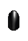
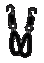
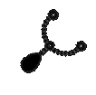
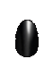
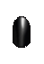
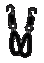
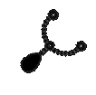
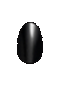

|
I have had dogs and cats my whole life. I know how hard it is to be away from home and worry that they are happy, healthy and safe. I am skilled at giving insulin to diabetic pets and inhalers to asthmatic cats. I love to cuddle furbabies of all kinds, even pet rats. I have vet techs in my immediate family and Im able to recognize emergencies if they should arise. I will send daily pictures and updates of your furbaby while you are away to give you peace of mind. I believe your pet will be more comfortable in their own home and Im happy to stay with them over night. Let me know if your cat or dog has any special needs or preferences, so I can keep their normal routine, to reduce their anxiety while you are away. I have been a pet-sitter in Williamson County, Texas since 2020 and currently service the cities of Georgetown, Hutto, Pflugerville, Round Rock and Taylor. |

 






